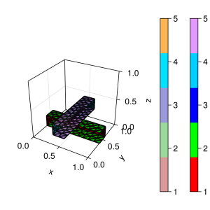

3D Grid examples
using ExtendableGridsQuadrilateral
function quadrilateral(; hx = 0.25, hy = 0.2, hz = 0.1)
X = collect(0:hx:1)
Y = collect(0:hy:1)
Z = collect(0:hz:1)
simplexgrid(X, Y, Z)
endCross3d
function cross3d()
X = collect(0:0.1:1)
Y = collect(0:0.1:1)
Z = collect(0:0.1:1)
grid = simplexgrid(X, Y, Z)
rect!(grid, (0, 0.4, 0), (1, 0.6, 0.2); region = 2, bregions = [1, 1, 1, 1, 2, 3])
rect!(grid, (0.4, 0, 0.2), (0.6, 1, 0.4); region = 2, bregions = [4, 4, 4, 4, (cur) -> cur == 3 ? 0 : 5, 6])
subgrid(grid, [2])
end
CI callbacks for ExampleJuggler.jl
Unit tests
function mask_bedges()
grid = quadrilateral(; hx = 0.25, hy = 0.25, hz = 0.25)
bedgemask!(grid, [0.0, 0.0, 0.0], [0.0, 0.0, 1.0], 1)
bedgemask!(grid, [0.0, 0.0, 0.0], [0.0, 1.0, 0.0], 2)
bedgemask!(grid, [0.0, 1.0, 0.0], [0.0, 1.0, 1.0], 3)
bedgemask!(grid, [0.0, 0.0, 1.0], [0.0, 1.0, 1.0], 4)
bedgemask!(grid, [0.0, 1.0, 0.0], [0.0, 0.0, 1.0], 5)
true
end
using Test
function runtests()
@test numbers_match(quadrilateral(), 330, 1200, 440)
@test mask_bedges()
@test numbers_match(cross3d(), 189, 480, 344)
endPlot generation
using GridVisualize
function generateplots(picdir; Plotter = nothing)
if isdefined(Plotter, :Makie)
size = (400, 400)
Plotter.save(joinpath(picdir, "quadrilateral.svg"), gridplot(quadrilateral(); Plotter, size))
Plotter.save(joinpath(picdir, "cross3d.svg"), gridplot(cross3d(); Plotter, size))
end
endThis page was generated using Literate.jl.